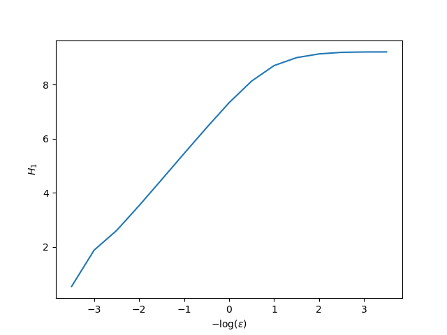
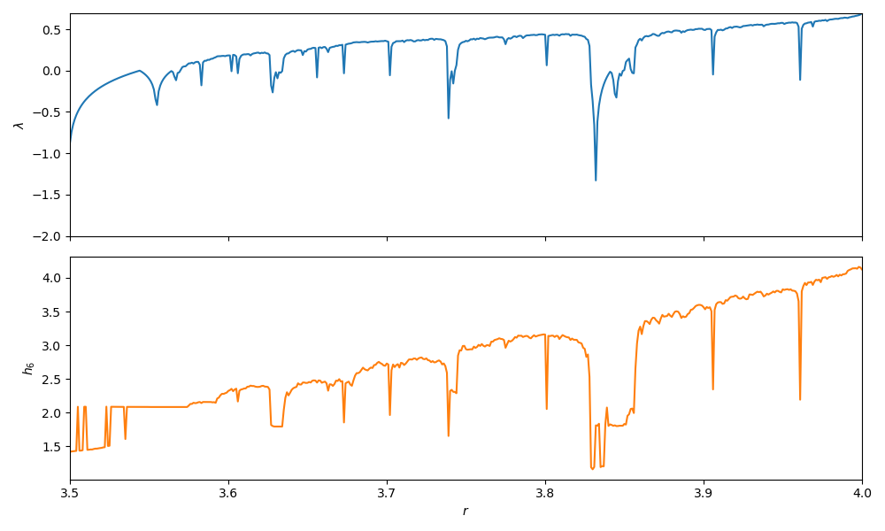

Entropies and Dimensions
Generalized Entropy
In the study of dynamical systems there are many quantities that identify as "entropy". Notice that these quantities are not the more commonly known thermodynamic ones, used in Statistical Physics. Rather, they are more like the to the entropies of information theory, which represents information contained within a dataset, or information about the dimensional scaling of a dataset.
One way of computing entropies in DynamicalSystems.jl is the "generalized entropy":
ChaosTools.genentropy — Functiongenentropy(α, ε::Real, dataset::AbstractDataset; base = Base.MathConstants.e)Compute the α order generalized (Rényi) entropy[Rényi1960] of a dataset, by first partitioning it into boxes of length ε using non0hist.
genentropy(α, εs::AbstractVector, dataset::AbstractDataset; base = Base.MathConstants.e)Same as [genentropy(α, ε, dataset) for ε in εs].
genentropy(α, p::AbstractArray; base = Base.MathConstants.e)Compute the entropy of an array of probabilities p, assuming that p is sum-normalized.
Optionally use base for the logarithms.
Description
Let $p$ be an array of probabilities (summing to 1). Then the Rényi entropy is
and generalizes other known entropies, like e.g. the information entropy ($\alpha = 1$, see [Shannon1948]), the maximum entropy ($\alpha=0$, also known as Hartley entropy), or the correlation entropy ($\alpha = 2$, also known as collision entropy).
Basically, given a Dataset you can partition it into boxes to calculate an entropy. See below for a detailed example.
Partitioning the dataset (i.e. doing a histogram) is in general a costly operation that depends exponentially on the number of dimensions of the data and algebraically to the box size ε.
However, in this specific case the partition process has some special aspects that can be taken advantage of, reducing tremendously the memory allocation and spent time!
The function used internally by genentropy is non0hist:
ChaosTools.non0hist — Functionnon0hist(ε, dataset::AbstractDataset) → pPartition a dataset into tabulated intervals (boxes) of size ε and return the sum-normalized histogram in an unordered 1D form, discarding all zero elements and bin edge information.
Performances Notes
This method has a linearithmic time complexity (n log(n) for n = length(data)) and a linear space complexity (l for l = dimension(data)). This allows computation of histograms of high-dimensional datasets and with small box sizes ε without memory overflow and with maximum performance.
Use binhist to retain bin edge information.
ChaosTools.binhist — Functionbinhist(ε, data) → p, binsDo the same as non0hist but also return the bin edge information.
Generalized Dimension Estimation
There are numerous methods that one can use to calculate a so-called "dimension" of a dataset, like for example the Fractal dimension. This real number can offer a lot of information about the object that the dataset represents.
Based on the definition of the generalized entropy, one can calculate an appropriate dimension, called generalized dimension:
ChaosTools.generalized_dim — Functiongeneralized_dim(α, dataset [, sizes]) -> D_αReturn the α order generalized dimension of the dataset, by calculating the genentropy for each ε ∈ sizes.
Description
The returned dimension is approximated by the (inverse) power law exponent of the scaling of the genentropy versus the box size ε, where ε ∈ sizes.
Calling this function performs a lot of automated steps:
- A vector of box sizes is decided by calling
sizes = estimate_boxsizes(dataset), ifsizesis not given. - For each element of
sizesthe appropriate entropy is calculated, throughd = genentropy.(α, sizes, dataset). Letx = -log.(sizes). - The curve
d(x)is decomposed into linear regions, usinglinear_regions(x, d). - The biggest linear region is chosen, and a fit for the slope of that region is performed using the function
linear_region. This slope is the return value ofgeneralized_dim.
By doing these steps one by one yourself, you can adjust the keyword arguments given to each of these function calls, refining the accuracy of the result.
The following aliases are provided:
- α = 0 :
boxcounting_dim,capacity_dim - α = 1 :
information_dim
As stated clearly by the documentation string, calling generalized_dim performs a lot of automated steps by calling other functions (see below) with default arguments. It is actually more like a convenient bundle than an actual function and therefore you should be careful when considering the validity of the returned number.
ChaosTools.estimate_boxsizes — Functionestimate_boxsizes(data::AbstractDataset; k::Int = 12, z = -1, w = 1)Return k exponentially spaced values: 10 .^ range(lower+w, upper+z, length = k).
lower is the magnitude of the minimum pair-wise distance between datapoints while upper is the magnitude of the maximum difference between greatest and smallest number among each timeseries.
"Magnitude" here stands for order of magnitude, i.e. round(log10(x)).
ChaosTools.linear_regions — Functionlinear_regions(x, y; dxi::Int = 1, tol = 0.2) -> (lrs, tangents)Identify regions where the curve y(x) is linear, by scanning the x-axis every dxi indices (e.g. at x[1] to x[5], x[5] to x[10], x[10] to x[15] and so on if dxi=5).
If the slope (calculated via linear regression) of a region of width dxi is approximatelly equal to that of the previous region, within tolerance tol, then these two regions belong to the same linear region.
Return the indices of x that correspond to linear regions, lrs, and the approximated tangents at each region. lrs is a vector of Int. Notice that tangents is not accurate: it is not recomputed at every step, but only when its error exceeds the tolerance tol! Use linear_region to obtain a correct estimate for the slope of the largest linear region.
ChaosTools.linear_region — Functionlinear_region(x, y; dxi::Int = 1, tol = 0.2) -> ([ind1, ind2], slope)Call linear_regions, identify the largest linear region and approximate the slope of the entire region using linreg. Return the indices where the region starts and stops (x[ind1:ind2]) as well as the approximated slope.
Example
For an example of using entropies to compute the dimension of an attractor let's use everyone's favorite system:
using DynamicalSystems, PyPlot
lor = Systems.lorenz()3-dimensional continuous dynamical system
state: [0.0, 10.0, 0.0]
e.o.m.: loop
in-place? false
jacobian: loop_jac
parameters: [10.0, 28.0, 2.6666666666666665]Our goal is to compute entropies for many different partition sizes ε, so let's get down to it:
tr = trajectory(lor, 100.0; Ttr = 10.0)
ες = ℯ .^ (-3.5:0.5:3.5) # semi-random guess
Hs = genentropy.(1, ες, Ref(tr))15-element Array{Float64,1}:
9.210440366976329
9.208499748932574
9.195140334192946
9.136445496766951
8.998905310194775
8.705004397152349
8.1305312663553
7.331853533923082
6.408657913235563
5.453352354803625
4.485476740802795
3.5260626238745894
2.6067548710932336
1.8789633825490644
0.5375831514462662xs = @. -log(ες)
figure()
plot(xs, Hs)
ylabel("\$H_1\$")
xlabel("\$-\\log (\\epsilon)\$");
The slope of the linear scaling region of the above plot is the generalized dimension (of order α = 2) for the attractor of the Lorenz system.
Given that we see the plot, we can estimate where the linear scaling region starts and ends. However, we can use the function linear_region to get an estimate of the result as well. First let's visualize what it does:
lrs, slopes = linear_regions(xs, Hs, tol = 0.25)
figure()
for i in 1:length(lrs)-1
plot(xs[lrs[i]:lrs[i+1]], Hs[lrs[i]:lrs[i+1]], marker = "o")
end
ylabel("\$H_1\$")
xlabel("\$-\\log (\\epsilon)\$");
The linear_region function computes the slope of the largest region:
linear_region(xs, Hs)[2]1.833384047211349This result is an approximation of the information dimension (because we used α = 1) of the Lorenz attractor.
The above pipeline is bundled in generalized_dim. For example, the dimension of the strange attractor of the Systems.henon map, following the above approach but taking automated steps, is:
using DynamicalSystems
hen = Systems.henon()
ts = trajectory(hen, 200000)
D_hen = generalized_dim(1, ts)1.215884931528749As a side note, be sure that you have enough data points, otherwise the values you will get will never be correct, as is demonstrated by J.-P. Eckmann and D. Ruelle (see Physica D 56, pp 185-187 (1992)).
Correlation sum (Grassberger-Proccacia)
ChaosTools.kernelprob — Functionkernelprob(X, ε, norm = Euclidean()) → pAssociate each point in X (Dataset or timesries) with a probability p using the "kernel estimation" (also called "nearest neighbor kernel estimation" and other names):
where $N$ is its length and $I$ gives 1 if the argument is true. Because $p$ is further normalized, it can be used as an alternative for the genentropy function (using the second method).
ChaosTools.correlationsum — Functioncorrelationsum(X, ε::Real; w = 1, norm = Euclidean()) → C(ε)Calculate the correlation sum of X (Dataset or timeseries) for a given radius ε and norm, using the formula:
where $N$ is its length and $I$ gives 1 if the argument is true. w is the Theiler window, a correction to the correlation sum that skips points that are temporally close with each other, with the aim of removing spurious correlations.
See the book "Nonlinear Time Series Analysis", Ch. 6, for a discussion around w and choosing best values.
See grassberger for more. See also takens_best_estimate.
correlationsum(X, εs::AbstractVector; kwargs...) → CsCalculate the correlation sum for every ε ∈ εs using an optimized version.
ChaosTools.grassberger — Functiongrassberger(data, εs = estimate_boxsizes(data); kwargs...) → D_CUse the method of Grassberger and Proccacia[Grassberger1983], and the correction by Theiler[Theiler1986], to estimate the correlation dimension D_C of the given data.
This function does something extrely simple:
cm = correlationsum(data, εs; kwargs...)
return linear_region(log.(sizes), log(cm))[2]i.e. it calculates correlationsum for various radii and then tries to find a linear region in the plot of the log of the correlation sum versus log(ε). See generalized_dim for a more thorough explanation.
See also takens_best_estimate.
ChaosTools.takens_best_estimate — Functiontakens_best_estimate(X, εmax, metric = Chebyshev(),εmin = 0) → D_C, D_C_95u, D_C_95lUse the so-called "Takens' best estimate" [Takens1985][Theiler1988] method for estimating the correlation dimension D_C and the upper (D_C_95u) and lower (D_C_95l) confidence limit for the given dataset X.
The original formula is
where $C$ is the correlationsum and $\epsilon_\text{max}$ is an upper cutoff. Here we use the later expression
where the sum happens for all $i, j$ so that $i < j$ and $||X_i - X_j|| < \epsilon_\text{max}$. In the above expression, the bias in the original paper has already been corrected, as suggested in [Borovkova1999].
The confidence limits are estimated from the log-likelihood function by finding the values of D_C where the function has fallen by 2 from its maximum, see e.g. [Barlow] chapter 5.3 Because the CLT does not apply (no independent measurements), the limits are not neccesarily symmetric.
According to [Borovkova1999], introducing a lower cutoff εmin can make the algorithm more stable (no divergence), this option is given but defaults to zero.
If X comes from a delay coordinates embedding of a timseries x, a recommended value for $\epsilon_\text{max}$ is std(x)/4.
Permutation Entropy
The permutation entropy is introduced by C. Bandt and B. Pompe as a "A Natural Complexity Measure for Timeseries", which directly applies to arbitrary real-world data and is particularly useful in the presence of dynamical or observational noise.
ChaosTools.permentropy — Functionpermentropy(x::AbstractVector, order [, interval=1]; base = Base.MathConstants.e)Compute the permutation entropy[Brandt2002] of given order from the x timeseries.
Optionally, interval can be specified to use x[t0:interval:t1] when calculating permutation of the sliding windows between t0 and t1 = t0 + interval * (order - 1).
Optionally use base for the logarithms.
For example, we will compute and compare the lyapunov exponent of the logistic map with the order-6 permutation entropy, like in the original paper.
using DynamicalSystems, PyPlot
ds = Systems.logistic()
rs = 3.5:0.001:4
ls = Float64[]; hs = Float64[]
for r in rs
ds.p[1] = r
push!(ls, lyapunov(ds, 100000))
# For 1D systems `trajectory` returns a vector
push!(hs, permentropy(trajectory(ds, 10000), 6))
end
f = figure(figsize = (10,6))
a1 = subplot(211)
plot(rs, ls); ylim(-2, log(2)); ylabel("\$\\lambda\$")
a1.axes.get_xaxis().set_ticklabels([])
xlim(rs[1], rs[end]);
a2 = subplot(212)
plot(rs, hs; color = "C1"); ylabel("\$h_6\$")
xlim(rs[1], rs[end]); xlabel("\$r\$")
tight_layout()
Even though the current implementation is fine and runs reasonably fast for moderate orders, it can get slow for high orders. Issue ChaosTools.jl#22 keeps track of this, and contains information on how to improve performance.
Kaplan-Yorke Dimension
ChaosTools.kaplanyorke_dim — Functionkaplanyorke_dim(λs::AbstractVector)Calculate the Kaplan-Yorke dimension, a.k.a. Lyapunov dimension[Kaplan1970].
Description
The Kaplan-Yorke dimension is simply the point where cumsum(λs) becomes zero (interpolated):
If the sum of the exponents never becomes negative the function will return the length of the input vector.
Useful in combination with lyapunovs.
Notice that calling this function requires you to pass the Lyapunov exponents in an ordered vector form (largest to smallest). Example:
using DynamicalSystems
hen = Systems.henon()
D_kp = kaplanyorke_dim(lyapunovs(hen, 100000))1.258705504865863- Rényi1960A. Rényi, Proceedings of the fourth Berkeley Symposium on Mathematics, Statistics and Probability, pp 547 (1960)
- Shannon1948C. E. Shannon, Bell Systems Technical Journal 27, pp 379 (1948)
- Grassberger1983Grassberger and Proccacia, Characterization of strange attractors, PRL 50 (1983)
- Theiler1986Theiler, Spurious dimension from correlation algorithms applied to limited time-series data. Physical Review A, 34
- Takens1985Takens, On the numerical determination of the dimension of an attractor, in: B.H.W. Braaksma, B.L.J.F. Takens (Eds.), Dynamical Systems and Bifurcations, in: Lecture Notes in Mathematics, Springer, Berlin, 1985, pp. 99–106.
- Theiler1988Theiler, Lacunarity in a best estimator of fractal dimension. Physics Letters A, 133(4–5)
- Borovkova1999Borovkova et al., Consistency of the Takens estimator for the correlation dimension. The Annals of Applied Probability, 9, 05 1999.
- BarlowBarlow, R., Statistics - A Guide to the Use of Statistical Methods in the Physical Sciences. Vol 29. John Wiley & Sons, 1993
- Bandt2002C. Bandt, & B. Pompe, Phys. Rev. Lett. 88 (17), pp 174102 (2002)
- Kaplan1970J. Kaplan & J. Yorke, Chaotic behavior of multidimensional difference equations, Lecture Notes in Mathematics vol. 730, Springer (1979)